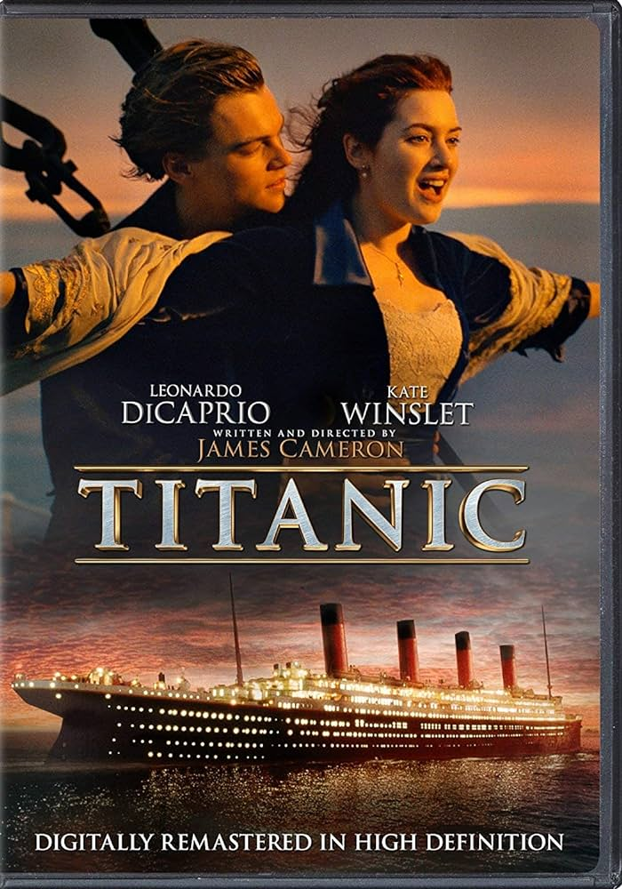
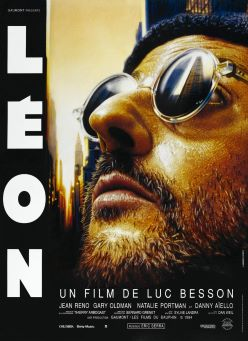
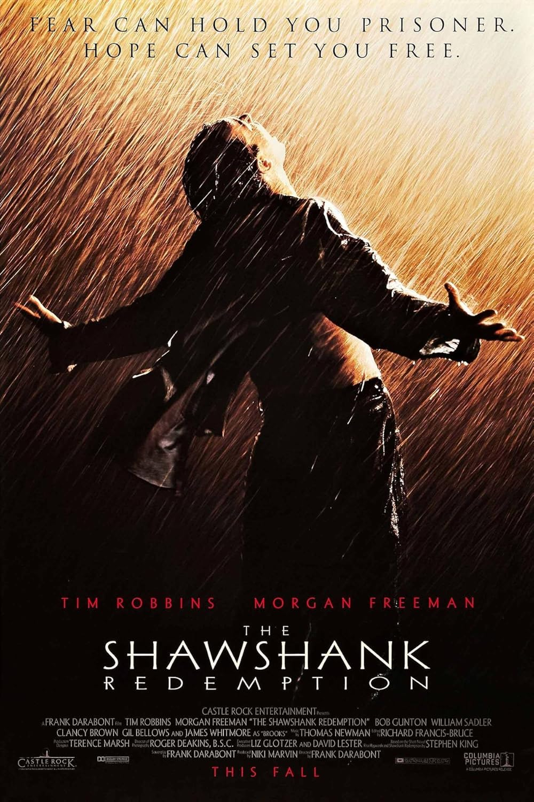
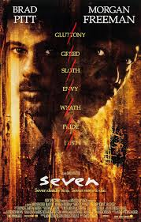

My favorites

The Godfather (1972)
Francis Ford Coppola
An epic masterpiece of the Corleone family — family, loyalty, and power.

The Godfather Part II (1974)
Francis Ford Coppola
A rare sequel as strong as the original — Vito and Michael in parallel eras.

The Godfather Part III (1990)
Francis Ford Coppola
Michael seeks legitimacy and redemption in the final chapter.

Titanic (1997)
James Cameron
Tragic romance on the ill-fated maiden voyage.

Léon: The Professional (1994)
Luc Besson
An assassin and a young girl — protection and sacrifice.

The Shawshank Redemption (1994)
Frank Darabont
Hope and friendship beyond prison walls.

Pulp Fiction (1994)
Quentin Tarantino
A bold, nonlinear crime saga — sharp dialogue, intersecting lives, and unforgettable moments.

Reservoir Dogs (1992)
Quentin Tarantino
A tense heist gone wrong — betrayal, paranoia, and violence in its rawest form.

The Hateful Eight (2015)
Quentin Tarantino
Strangers trapped in a blizzard — secrets unravel, trust dissolves, violence erupts.

The Wolf of Wall Street (2013)
Martin Scorsese
Excess without limits — greed, power, and moral collapse.

Se7en (1995)
David Fincher
A grim pursuit — sin, justice, and inevitable darkness.

Spirited Away (2001)
Hayao Miyazaki
A surreal coming-of-age journey — identity, courage, and transformation.

My Neighbor Totoro (1988)
Hayao Miyazaki
Childhood and wonder — quiet magic in everyday life.

Howl's Moving Castle (2004)
Hayao Miyazaki
Love and war intertwine — transformation beyond appearances.
Watchlist
Searching for the next classic. More soon.